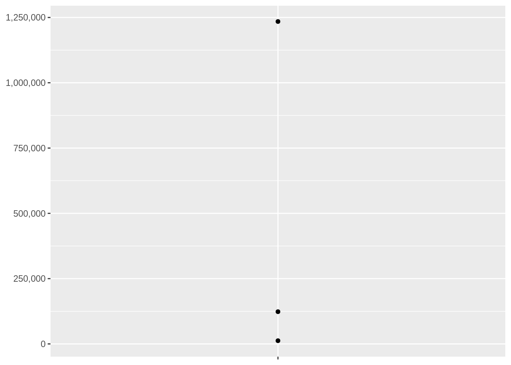

10.3 How does a function factory work?
Figure 10.2: How does it work? | Credits: kakaakigas.com/how-it-works/
power1 <- function(exp) {
function(x) {
x ^ exp
}
}
square <- power1(2)
cube <- power1(3)power1() is the function factory and square() and cube() are manufactured functions.
What we know already: Function Features
- first-class functions
name <- function(variables) {
}- function environment
fn_env()
y <- 1
f <- function(x) x + y
rlang::fn_env(f)
#> <environment: R_GlobalEnv>- function execution environment
h <- function(x) {
# 1.
a <- 2 # 2. assingned value in the environment
x + a
}
y <- h(1) # 3.A function factory is defined as a functional programming tools, as well as functionals, and function operators.
An application would be to tackle the understanding of:
- Box-Cox transformation
- maximum likelihood problems
- bootstrap resamples
10.3.1 Factory fundamentals
- Environments
- Force calculation
- Super assignments
- Cleaning up
library(rlang)
#>
#> Attaching package: 'rlang'
#> The following object is masked _by_ '.GlobalEnv':
#>
#> warn
#> The following objects are masked from 'package:purrr':
#>
#> %@%, as_function, flatten, flatten_chr, flatten_dbl, flatten_int,
#> flatten_lgl, flatten_raw, invoke, splice
library(ggplot2)
library(scales)
#>
#> Attaching package: 'scales'
#> The following object is masked from 'package:purrr':
#>
#> discard
#> The following object is masked from 'package:readr':
#>
#> col_factorLooking at manufactored functions, in our example the square() function, and imagine to do not know anything about it. The environment can be investigated with env_print() function. Two different enviroments can be found, with the same parent.
rlang::env_print(square)
#> <environment: 0x562f8eb3b448>
#> Parent: <environment: global>
#> Bindings:
#> • exp: <lazy>To know more about it, exp is visible as the engine of the function, the computed value (square <- power1(2)) can be retrieved like this:
fn_env(square)$exp
#> [1] 2
To make sure every argument is evaluated, whenever x is assigned to a different value.
force()power1 <- function(exp) {
function(x) {
x ^ exp
}
}
square <- power1(x)
x <- 2
square(2)
#> [1] 4Assign a value to the variable x, while it goes in the environment, see what’s happen to our function:
x <- 3
square(2)
#> [1] 4This is not necessarely wrong, but what if we’d like to set a variable x which can assume other values in the environment?
power2 <- function(exp) {
force(exp)
function(x) {
x ^ exp
}
}
x <- 2
square <- power2(x)
square(2)
#> [1] 4Look what’s happen now:
x <- 3
square(2)
#> [1] 4Even if we assigned a new value to x and it is stored in the environment, our function doesn’t take consideration of it and keep doing its calculation based on the first variable assignment.
The super assignment operator
<<-Another way is to set the function to mantain the state, in a way that each invocation will be completely independent, and a new environment is created, because considered as a fresh start (6.4.3).
new_counter <- function() {
i <- 0 # first assignment inside the function (fresh start)
function() {
i <<- i + 1 # second assignment (super assignment)
i
}
}
counter_one <- new_counter()
counter_two <- new_counter()
counter_one()
#> [1] 1
counter_one()
#> [1] 2
counter_two()
#> [1] 1“As soon as your function starts managing the state of multiple variables, it’s better to switch to R6”
Cleaning up using rm() inside a function:
f1 <- function(n) {
x <- runif(n)
m <- mean(x)
function() m
}
g1 <- f1(1e6)
lobstr::obj_size(g1)
#> 8.01 MB
#> 8,013,104 B
f2 <- function(n) {
x <- runif(n)
m <- mean(x)
rm(x)
function() m
}
g2 <- f2(1e6)
lobstr::obj_size(g2)
#> 13.26 kB
#> 12,944 B10.3.2 Example of: Graphical factories
Graphical factories useful function factories, such as:
Labelling with:
- formatter functions
y <- c(12345, 123456, 1234567)
comma_format()(y)
#> [1] "12,345" "123,456" "1,234,567"number_format(scale = 1e-3, suffix = " K")(y)
#> [1] "12 K" "123 K" "1 235 K"They are more commonly used inside a ggplot:
a_ggplot_object +
scale_y_continuous(
labels = comma_format()
)
Using binwidth in facet histograms
- binwidth_bins
binwidth_bins <- function(n) {
force(n)
function(x) {
(max(x) - min(x)) / n
}
}Or use a concatenation of this typr of detecting number of bins functions:
- nclass.Sturges()
- nclass.scott()
- nclass.FD()
base_bins <- function(type) {
fun <- switch(type,
Sturges = nclass.Sturges,
scott = nclass.scott,
FD = nclass.FD,
stop("Unknown type", call. = FALSE)
)
function(x) {
(max(x) - min(x)) / fun(x)
}
}Internals:
- ggplot2:::plot_dev()